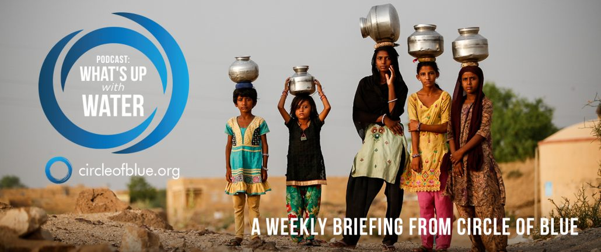
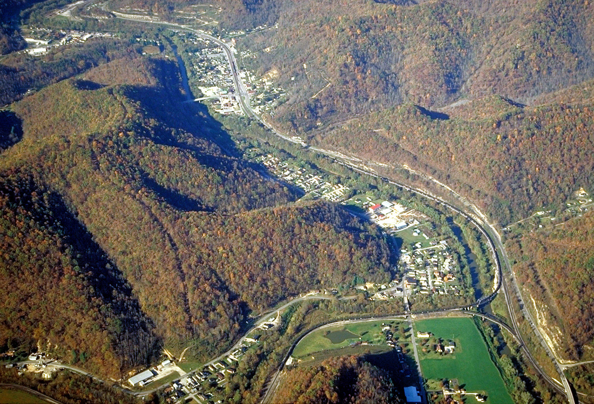
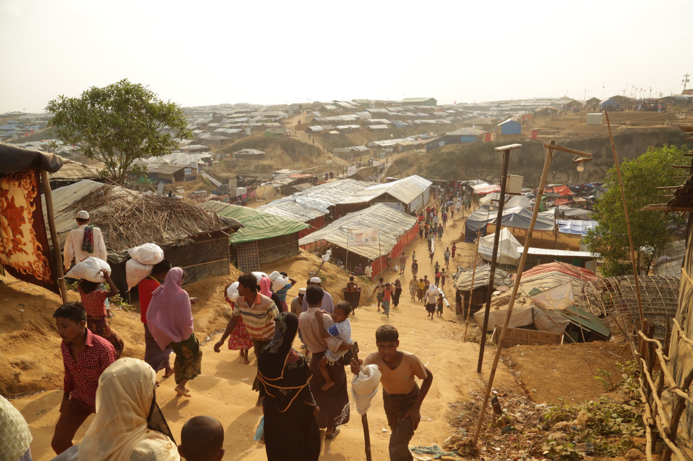

What’s Up With Water – June 11, 2018

Eileen Wray-McCann is a writer, director and narrator who co-founded Circle of Blue.During her 13 years at Interlochen Public Radio, a National Public Radio affiliate in Northern Michigan, Eileen produced and hosted regional and national programming.She’s won Telly Awards for her scriptwriting and documentary work, and her work with Circle of Blue follows many years of independent multimedia journalistic projects and a life-long love of the Great Lakes.She holds a BA and MA radio and television from the University of Detroit.Eileen is currently moonlighting as an audio archivist and enjoys traveling through time via sound.
Posted On: 2018-06-11T00:00:00
Posted By: Eileen Wray-McCann


Content Date: 2018-06-11
Download Date: 2021-05-13
Document ID: L0C04BOVF